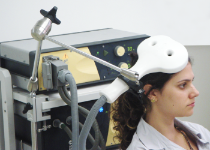
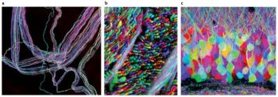

4.6: Techniques that Modulate Brain Activity
Neuroimaging studies focus on correlations between brain activity and behavior and can’t establish a causal role of a brain region in determining behavior. To establish a causal rather than correlational relationship, we need to alter brain function and observe resulting changes in behavior. Lesions are one way to modify brain structure and can reveal a causal relationship (e.g., when losing a brain region leads to loss of function, that brain area is necessary or involved in the function). However, invasive lesions can only be introduced in animals, which differ from humans in key ways. Lesions in human brains can only be studied in patient populations; that is, after a patient experiences brain damage from a stroke or other injury. New technologies allow researchers to temporarily and non-invasively modify human brain function.
Transcranial magnetic stimulation (TMS) is a form of brain stimulation that uses magnets to alter brain activity. Researchers place a magnetic coil over the scalp and apply a magnetic current that stimulates the neurons below the magnetic coil (Figure 12). Depending on the type and rate of magnetic pulses, TMS can temporarily “turn off” or “turn on” the brain area under the coil. In research domains, researchers might temporarily “turn off” or “turn on” parts of the frontal lobe and look at subsequent feelings of craving or emotion processing. TMS is also used in clinical settings and has effectively treated some individuals with depression (Perera et al., 2016).

Transcranial direct current stimulation (tDCS) is similar to TMS except that it uses electrical current directly (rather than inducing it with magnetic pulses) via small electrodes on the skull (Beck & Tapia, 2023). A brain area is stimulated by a low current (equivalent to an AA battery) for an extended time. When combined with cognitive training, tDCS has been shown to improve many cognitive functions such as mathematical ability, memory, attention, and coordination (e.g., Brasil-Neto, 2012; Feng et al., 2013; Kuo & Nitsche, 2012).
Gene Knockout is a genetic technique used in animals, wherein researchers remove or inactivate a specific gene. This allows researchers to study the function of that gene in a living organism and its effects on the phenotype. Gene knockout is considered a “loss-of-function mutation” (what function is lost after knocking out a specific gene?). Gene knockouts are used in many organisms including fruit flies, zebrafish, and mice. Studies using “knockout mice” have been extremely valuable in understanding the role of genes in brain development, neurological disease, cancer, immune disorders, and even the genes involved in bad breath (Pol et al., 2018). Gene Knock-in is a related technique, but instead of removing a gene, knock-in inserts a gene. Gene knock-in is considered a “gain-of-function mutation” (what function is gained after inserting this gene?).
Brainbow is another innovative transgenic technique (transgenic means transferring genes from one organism to another) that inserts genetic material to label individual neurons with distinct colors and produces detailed neural maps. In Brainbow, green fluorescent protein, a protein found in jellyfish and corals that exhibits bright green fluorescence, is genetically modified to produce different colors. These various fluorescent proteins are then inserted into individual neurons in different ratios, flagging each neuron with a unique color (see Figure 13). Brainbow has enabled the simultaneous mapping of hundreds of neurons and allows scientists to trace the intricate connections between neurons. Thus, Brainbow has been groundbreaking for the field of neural connectomics, which studies the organization of neural networks. This technique provides striking images of neurons and highlights biopsych research at the molecular and cellular level.

Optogenetics is an especially exciting technique for manipulating brain activity in non-human animals (Deisseroth, 2011). Optogenetics uses light to control specific populations of neurons in living animals. For the neurons to be sensitive to light, researchers genetically insert light-sensitive proteins (taken from algae) into a specific type of neuron. After inserting tiny optical fibers into the animal’s brain, researchers can turn on the light to excite or inhibit these specific cells. Scientists have used the ability to control the activity of specific neuronal populations to investigate their role in learning, memory, decision-making, addiction, movement, and many other areas of active research.
In sum, the various research techniques used in biological psychology each have their strengths and weaknesses in terms of spatial resolution, temporal resolution, ease-of-use, invasiveness, cost, precision, etc. Using the different tools in a complementary manner provides converging evidence for understanding how the brain works.
Text Attributions
This section contains material adapted from:
Beck, D. & Tapia, E. (2023). The brain. In R. Biswas-Diener & E. Diener (Eds), Noba textbook series: Psychology. Access for free at http://noba.to/jx7268sd License: CC BY-NC-SA 4.0 DEED
Biswas-Diener, R. (2023). The brain and nervous system. In R. Biswas-Diener & E. Diener (Eds), Noba textbook series: Psychology. Access for free at http://noba.to/4hzf8xv6 License: CC BY-NC-SA 4.0 DEED
Media Attributions
- Transcranial Magnetic Stimulation (TMS) © Wikimedia is licensed under a CC BY-SA (Attribution ShareAlike) license
- Brainbow (Lichtman_2008) © Wikimedia is licensed under a CC BY-SA (Attribution ShareAlike) license


A neuroscience technique whereby a brief magnetic pulse is applied to the head that temporarily activates or inhibits ongoing neuronal activity.
A neuroscience technique whereby a weak current is applied to the head that temporarily activates or inhibits ongoing neuronal activity.
A research technique that involves removing or inactivating a specific gene in an organism (often a fruit fly, zebrafish, or mouse), which allows researchers to study the effect of that gene on the phenotype.
A research technique that involves inserting a specific gene in an organism, which allows researchers to study the effect of that gene on the phenotype.
A genetic technique in which individual neurons can be labeled and mapped using fluorescent proteins.
A biological technique to control the activity of neurons or other cell types with light.